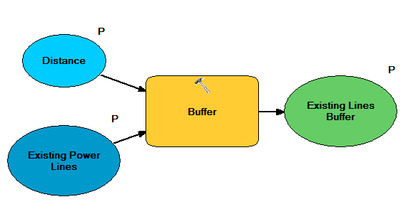

Comprehensive Project Development
Our capstone project for this course was a combination of many of the technologies and processes which were explored in the first half of the course, and can be read about in more detail on the pages on this site exploring database design, SQL, geodatabase design, and commercial web delivery. Given a problem, I developed a solution from the ground up to meet the exact needs and specification provided, using ArcGIS Server technology to develop an interactive geoprocessing application based on ArcSDE/PostgreSQL database implementation which I designed to serve the underlying data.
Problem
Due to the black-out of the northeastern United States on August
14, 2003 and Homeland Security issues, the Federal government is
investigating possible locations for new high power transmission
lines to increase the stability of the United States power grid. New
River Gorge National River is being investigated as one possible
location. As part of the investigation, the effects of a new power
transmission line corridor within the park boundary must be
assessed. The resulting environmental impact statement must address
both the natural and cultural resources managed by the park.
In order to facilitate the analysis requirements, you are tasked
with developing a web mapping application that can:
-
Query for specific vertebrate species locations.
Buffer existing power transmission lines.
Allows managers to propose the location of high power transmission line.
Create a corridor around the proposed transmission line.
Determine if a vertebrate monitoring site is within the proposed corridor.
Determine if any culturally sensitive buildings are within the corridor.
Print maps and reports of the analysis.
Implementation
The implementation of this project is illustrated below, including both the final project as well as many of the intermediate steps taken to develop the solution
Screen capture of web mapping application
Below is an overview of the map application. Because of the many tasks available and the scale of the data, full screen shots of subsequent views of the application in action are also given. But this serves as an overview of what the user sees when first connecting to the map.
Screen capture of task dialog boxes
Dialog boxes corresponding to the required tasks are displayed below. An additional view of the print dialog box can also be seen in the next section, with populated data.
Task results
The “Find Vertebrate Species” tool completes all of the objectives of requirement one, including spatial location, x/y coordinates, species name, year, and number of species observed.
The application allows the user to display the habitat characteristics of each vertebrate monitoring location. In this example, a terrestrial habitat exists at the monitoring location.
The user can buffer existing power lines to a distance of their choosing. Shown here are a section of power lines buffered to 300 meters.
The user can draw a new transmission line of their choosing. Shown here is a Z-shaped transmission line drawn by the author. For some reason, the user-drawn lines will not consistently stay on the map, despite specifying “Add to Display” in the corresponding model. Fortunately, this is less of an issue because the transmission lines are apparent from the buffer location.
And here are the results from the buffering of the user-created transmission line, with the resultant buildings and vertebrate test sites affected by the line. Some other layers are turned off for increased visibility.
This is another view of the results of buffering and clipping result, except zoomed in so that you can see the buildings and affected sample sites in much greater detail. You can also tell clearly that the selected building is a contributing feature.
This is a duplicate of the previous image, except this time you are able to see a species affected by the proposed transmission line (a green salamander) instead of a building.
Next, the printing of results. Below is an image illustrating a selected vertebrate sample site, an affected building, and an affected species all added to the table of contents.
And finally, the print page output, showing the page scrolled down such that the three sets of tabular results can be read.
Models Used for Geoprocessing Tasks
The model for buffering the existing lines was simple and fairly straightforward.

The model for buffering the new lines was considerably more complex.
Dia diagram
DDL and SQL statements
DDL to Create Tables
-- Parse::SQL::Dia version 0.16
-- Documentation http://search.cpan.org/dist/Parse-Dia-SQL/
-- Environment Perl 5.012000, C:\strawberry\perl\bin\perl.exe
-- Architecture MSWin32-x86-multi-thread
-- Target Database postgres
-- Input file neri.dia
-- Generated at Thu Mar 22 22:04:03 2012
-- Typemap for postgres not found in input file
-- get_constraints_drop
-- alter table neri_tbl_data drop constraint DataHaveLocations ;
-- alter table neri_tbl_data drop constraint DataHaveEvents ;
-- alter table neri_tbl_data drop constraint DataHaveSpecies ;
-- get_permissions_drop
-- get_view_drop
-- get_schema_drop
-- drop table neri_tbl_species;
-- drop table neri_tbl_data;
-- drop table neri_tbl_locations;
-- drop table neri_tbl_events;
-- get_smallpackage_pre_sql
-- get_schema_create
create table neri_tbl_species (
species_id varchar (50) not null,
category_id integer ,
common_name varchar (50) ,
latin_name varchar (50) ,
constraint pk_neri_tbl_species primary key (species_id)
) ;
create table neri_tbl_data (
rec_id integer not null,
location_id varchar (255) ,
event_id varchar (255) ,
category integer ,
protocol varchar (255) ,
species_id varchar (50) ,
time_of_day varchar (50) ,
individuals integer ,
constraint pk_neri_tbl_data primary key (rec_id)
) ;
create table neri_tbl_locations (
location_id varchar (255) not null,
location_description varchar (255) ,
utm_x numeric (15,5) ,
utm_y numeric (15,5) ,
habitat varchar (50) ,
habitat_description varchar (100) ,
constraint pk_neri_tbl_locations primary key (location_id)
) ;
create table neri_tbl_events (
event_id varchar (255) not null,
year integer ,
constraint pk_neri_tbl_events primary key (event_id)
) ;
-- get_view_create
-- get_permissions_create
-- get_inserts
-- get_smallpackage_post_sql
-- get_associations_create
alter table neri_tbl_data add constraint DataHaveLocations
foreign key (location_id)
references neri_tbl_locations (location_id) ;
alter table neri_tbl_data add constraint DataHaveEvents
foreign key (event_id)
references neri_tbl_events (event_id) ;
alter table neri_tbl_data add constraint DataHaveSpecies
foreign key (species_id)
references neri_tbl_species (species_id) ;
SQL to Load Data
-- Load data
COPY neri_tbl_events FROM 'c:/gis/jebaker3/neri_tbl_events.txt' Delimiters ',' CSV;
COPY neri_tbl_locations FROM 'c:/gis/jebaker3/neri_tbl_locations.txt' Delimiters ',' CSV;
COPY neri_tbl_species FROM 'c:/gis/jebaker3/neri_tbl_species.txt' Delimiters ',' CSV;
COPY neri_tbl_data FROM 'c:/gis/jebaker3/neri_tbl_data.txt' Delimiters ',' CSV;
SQL to Create Vertebrate Inventory View
-- I used this to create a feature class containing the inventory
-- and also for joining with the sample site data.
-- From assignment, data we need for query is:
-- a) The spatial location of the plots with background imagery
-- b) The X,Y location of the plot
-- c) The species name
-- d) The year the observation was made
-- e) The number of species observed at that location
CREATE VIEW neri_v_vertibrate_inventory AS
SELECT -- what data do we need?
l.utm_x,
l.utm_y,
l.location_id, -- also including location_id to make joining
-- to the sample locations easier
-- if I want to go that route.
s.common_name,
s.latin_name,
e.year,
d.individuals AS number_of_individuals
FROM -- which tables hold this data?
neri_tbl_data AS d,
neri_tbl_events AS e,
neri_tbl_locations AS l,
neri_tbl_species AS s
WHERE
-- link the data table to the locations table
d.location_id = l.location_id
AND -- link the data table to the events table
d.event_id = e.event_id
AND -- link the data table to the species table
d.species_id = s.species_id
ORDER BY -- put this in some sort of order so we can easily look at it
s.common_name
PostgreSQL schema and examples of each table
Portions relevant to this project are highlighted. Obviously some of the iXX tables correspond to feature classes in this project, but it is not easy (or necessary) to tell which are which. Tables with a neri_tbl_ prefix are strictly tabular data; the others correspond to feature classes, except for the custom view at the bottom.
neri_tbl_data
neri_tbl_events
neri_tbl_locations
neri_tbl_species
Yes, the common name and latin name are switched here, and in the subsequent view created from this table. I realized this so late into the process that I opted to correct it in the feature class created from the view, rather than correct it here.
neri_v_vertebrate_inventory
ArcSDE geodatabase schema
Only portions relevant to this project are show. The database also contains additional data from previous assignments which do not pertain to NERI. All feature classes were placed in a feature set to help keep the data organized, but in a production environment, additional naming conventions may need to be applied or separate databases should be used.
Reflection
This project was an opportunity to combine many of the skills which we had learned separately into a single, comprehensive design. Rather than providing us with instructions, we were given the project requirements, and asked to solve the problem using the tools we had been using previously. This open ended approach helped me feel quite confident that I can now develop a web-based geospatial application using ArcGIS Server from the ground up. It also made me realize that a number of the problems I have found frustrating to work with in a desktop environment might be more manageable by using an online application, as I could easily recruit help for running individual scenarios if there application were set up correctly.